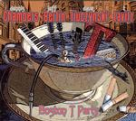

| Artist: | Dennis Chambers/Jeff Berlin/Daze Fiuczynski/T Lativz |
| Title: | Boston T Party |
| Label: | Mascot M 7187 2 |
| Length(s): | 59 minutes |
| Year(s) of release: | 2006 |
| Month of review: | [10/2007] |
Okay. To the album. The name of the album implies that T Lavitz, formerly of Dixie Dregs is the prominent member here, and indeed he is the main composer here although Fiuczynski and Berlin also contribute. (My iTunes lists this album under the artist name of Dennis Chambers, the one who contributes the least to the writing). The prominence of the keyboardplayer is noticeable in the opener D Funk'd which has a strong, but somewhat lazy swing. The gurgliness of the keyboards actually brings the Ozrics to mind, something that I did not quite expect. Although duellistic, the clash between guitar and keyboards stay relatively cool and standoffish. The thematics work is as often is the case rather predictable. The band aims for the groove, but when it comes to grooves I prefer a bit more fire. This is too laid back. I want the paint to blister from the walls. It simply dribbles on. Then we vary from Daft Punk styled (with keys and key-styled guitar), to blues, back to the subdued but melodically interesting All Thought Out, with a bit of a Happy The Man feel. But halfway, the band moves into Spyro Gira territory, and then back to guitar screams and the like. Certainly a melting pot styles, and not so ehm well thought out it seems. The most interesting tune comes from the longish Emotional Squalor that enjoys a somewhat Arabian motiv to good effect, and the pace finally comes in. The slow down does spoil it a bit, as the guitar moves in a bit bluesily. The middle part is okay again as the motiv alternates with guitar squeals and some organ. Deff 184 combines bass and drums, and that is about it. Last Trane brings us back to a slow blues tune. The organ is alos prominent here, bringing in the warm feel. The Focus/Akkerman feel is quite strong at the end. A song like Constant Comment does not go anywhere, but the final song, entitled Foxy Morons, shows a bit more spunk and fire.
Although this album is more adventurous than the average album in its genre (and this is mainly due to the keyboards of T Lavitz, so I guess his T in the title is deserved), it still fits very much in the musician's musicians side of jazzrock. There are some added blues effects here, added mainly by the guitar player and the contribution by Berlin, evoking an Akkerman/Focus feel throughout. Fans of that band might go and take a look as well.